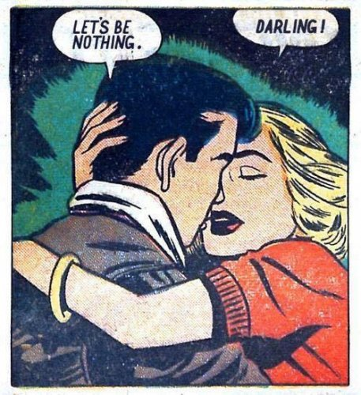

--Byron Katie
“To see the separate self clearly is to see its non-existence.”
--Rupert Spira
“Within a second, the self returns, saying, “What the hell was that?”
-- Richard Sylvestor
Recently someone told me about a spiritual writer who had had a big enlightenment experience, experiencing a seeing-through of the self, and then carrying around extreme fear about that for a few years.
This grandly-enlightened person got a glimpse that they were nothing, after being pretty darned certain for all of their life that they were something.
As most folks do.
And understandably that could be felt like a giant loss, like a sort of death. After all, there was a me there, and then… nothing. Yikes.
Still, it’s odd, don’t you think? I mean, if this person saw that we’re nothing, then what was afraid?
Nothing, that’s what.
Certainly consciousness wasn’t afraid of disappearing.
Because where would it go- the island of lost selves?
No, for that author, the thing that was afraid could only have been the self. The one supposedly done away-with.
Fear was simply a subtle way of validating the me who had lost something.
Besides, for them to have lost the self, there had to have been a self there in the first place, something which could get lost. And this one went missing. Just up and left.
All those years that self was there, and all it took was for them to see that it wasn’t there.
And then boom, self was outta here.
As if simply their seeing made the difference between self and no self.
Though of course, if there’s no self, then there's never been one. If we’re nothing, we’ve always been nothing.
And life has gone on.
Seeing it, changes nothing.
Nothing is lost either way.
Now I realize that for many folks, maybe even you, this type of stuff makes zero sense.
“Of course there’s a me. I’m right here. Jeez.”
To those readers I’d just say, if you are something, show it to me.
Literally show me your self.
You’re not skin, bones, muscles. You’re not air around a body. You’re not electricity. You’re not light.
None of those things are a self.
Those are things or ideas representing, standing-in-for, substituting for, a self.
A representation isn’t the real thing it represents.
Ok so, so far we’re finding nothing.
Which is apparently all we actually are.
And yet, even so, we may begin to notice the necessity of these bits of nothingness.
That color- it's happening in our eyeballs.
No eyeballs, no color.
The color is us.
That sound? Happening in our ears. That sensation? Happening in US.
Like a tree falling in the woods. Making no sound until it’s heard.
Without us to experience, what is here?
Turns out all experience goes through the fulcrum of us.
Making us required, integral, necessary, to the experience of experiencing.
There is literally nothing without us.
Because everything is made of us.
Which makes these self-nothings, not nothing, but everything.
And that can never be lost.
Ok so fine, what’s the point?
Well, us. We are the point. The unique experience of these snowflakes. Everything. Experience. Existence. Us.
We are the point.
This is what that spiritual author’s fear obscured, in their newly represented enlightened version of self. ("This is me, the one who is enlightened and terrified.")
It starts to be clear how so many spiritual seekers work so hard and yet can’t find.
Because nothing can’t find nothing.
And Everything is already here, completely unhidden, right here in plain sight.
Where or why would we get busy looking for that which is already here?
Yes the mind wants to be something. Yes, we don’t want to be nothing.
And yet nothing is indeed what we are.
And also, we are everything.
The circuits may begin to fry at this point.
Because paradox sometimes does that to a mind that wants straight-line, logical explanations and realizations.
Still, it’s quite something.
And also, quite nothing.
And also, quite
Everything.
"Being nothing, you are everything. That is all." –Kalu Rinpoche
"Body is nothing more than emptiness,
emptiness is nothing more than body.
The body is exactly empty,
and emptiness is exactly body...
Nothing is born, nothing dies,
nothing is pure, nothing is stained,
nothing increases and nothing decreases...
Which means...
Gone,
gone,
gone over,
gone fully over.
Awakened!
So be it!"
--The Heart Sutra (Partial), by Avalokiteshvara, Bodhisattva of Compassion
to subscribe and get your Mind-Tickled every week.
